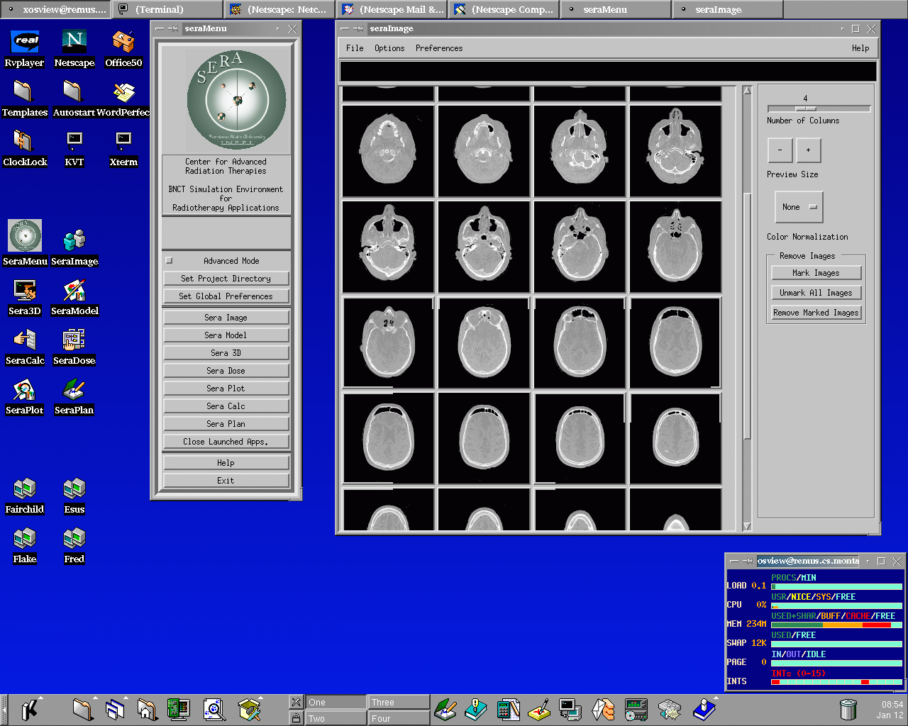

SERA:
Simulation Environment for Radiotherapy
Applications
User's Manual
Version 1C0

SERA:
Simulation Environment for Radiotherapy
Applications
User's Manual
Version 1C0

2. Concepts and Notations
The basic concepts used by SERA are slices, bodies, and body-slices, as illustrated in Figure 2.1. A slice is data corresponding to a single medical image. Typically, several anatomical features of interest will intersect a slice. For example, a slice can contain a cranial object, tumor object, and objects defining eyes, sinuses, and other relevant features.

Figure 2.1: Basic SERA Concepts
Bodies correspond to anatomical features from the image (such as the skull, brain, eyes). Body-slices are intersections of bodies (physical features) with slices (a medical image). They are defined by drawing, filling, or painting the body on the slice. Once defined, body definitions in different slices are combined to form three-dimensional volumes.
Typically, the user begins by displaying an image (slice), and then defining the objects on that image which represent body-slices (see Section 5). Body-slices can then be copied to new slices, and modified to correspond with the shapes in each new slice.
After several body-slices have been defined, they may be reconstructed (or synthesized) into a body representing an anatomical feature. These reconstructions can be displayed in a three-dimensional viewing window, where viewing controls allow arbitrary views of the reconstructed data.
When the program is running, there are a number of different types of window objects which appear on the screen. The graphics interface is based on the X11 window environment [3] , the Motif interface toolkit [4], and the OpenGL three-dimensional graphics system [5].
As shown in Figure 2.2, there are several components in a windows environment.

Figure 2.2: Typical X11 Environment
SERA input devices are the keyboard, which is used for textual input, and the mouse, which is used for both pointing and selection by maneuvering the mouse pointer about the screen and clicking the mouse button to indicate desired actions. The meaning of the mouse clicks and key strokes depends upon their context.
In a menu, the left mouse button selects an item from the menu to indicate what operation is to be performed. At other times, the keyboard can be used to generate strings in the active window. The program prompts for the type of input expected.